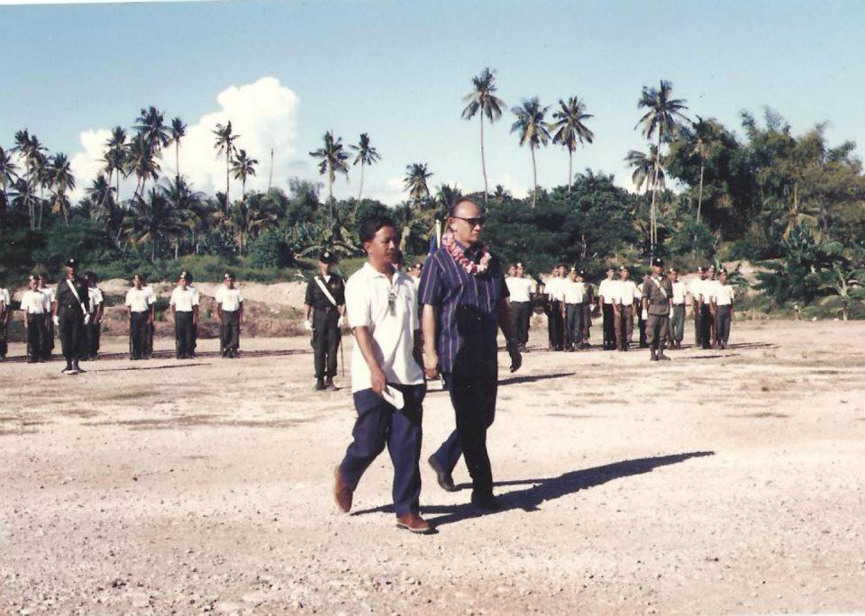
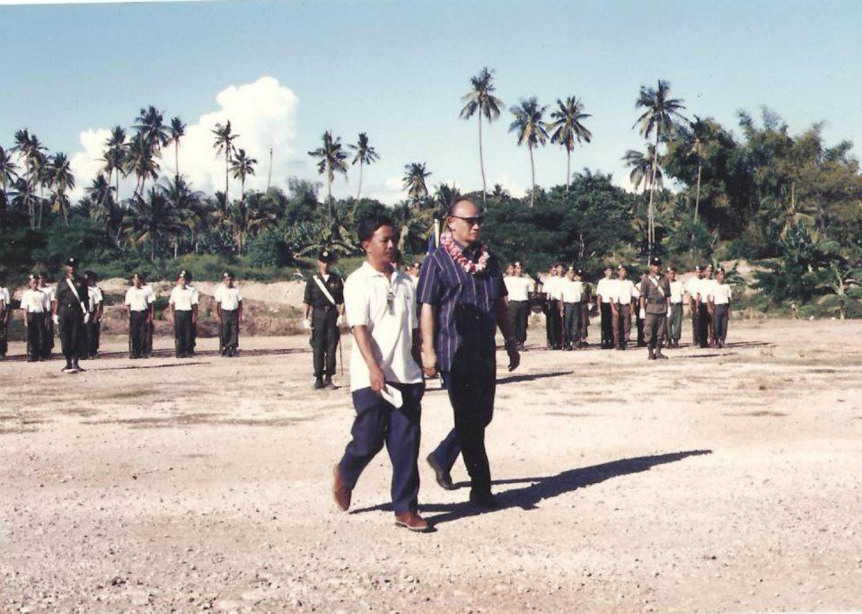

302985argaonhs@gmail.com
09562461456

Argao National High School
San Miguel Street | Canbanua | Argao | Cebu | Region VII
HISTORICAL BACKGROUND
It was in mid-summer of 1994 when the parents of the unfortunate students, who were considered as excess
population
of the CSCST-AIFC Argao Campus, joined efforts to refer to the local government and pleaded for an opening
of
a
high
school in the town proper. During that time, the school (CSCST-AIFC) was limiting their population. After
thorough
deliberation of the students' interests and welfare, the Municipal Mayor Daniel Sesaldo and Sangguniang
Bayan
(SB)
members decided to have a high school, which is an extension of the Colawin National High School, Colawin,
Argao,
Cebu.
Many constituents were delighted to have an extension school located in the heart of the town. However, when
the
school year (SY) 1994-1995 was about to begin, other problems arose: (1) hiring of teachers, (2) where
classes
were
to be held, and (3) textbooks, chairs, and chalkboards. Despite the odds, everyone concerned was guided by
the
belief that "God provides."
On June 6, 1994, Mrs. Nigelita A. Relacion brought the 114 students from CSCST-AIFC to the Argao
mini-coliseum
opposite of the said school and had these students sit on a stairway, with their parents sitting opposite
them,
saddened by the situation.
With this situation, three teachers voluntarily and humbly accepted the challenge of educating the young
minds,
namely Mrs. Nigelita A Relacion, Mr. Bebiano C. Barrios, and Miss Luisita O. Carreon. In return, they
received
an
honorarium from the local government of P3,101.00 per month. Having teaching as their vocation, they
dedicated
themselves to the challenging world in the Argao mini-coliseum where classes were held. Some students were
sitting
on a stairway up to the stage, while others brought stools to and from the so-called school-coliseum.
Despite
criticisms that came their way, the students were teased with the name of the school as "UC" - the
University
of
Coliseum. Such an acronym made them tougher and determined to double their efforts to outwit those who
criticized
them.
Thus, the pioneer batch of "Argao National High School-Colawin Extension" was blessed with a new and
spacious
school
site in Barangay Canbanua. The first enrollment of 165 students grew to 1,200 students in their fourth year
of
operation. The limited benches and arm-chairs are now in a one-to-one ratio. The teaching force of three
became
six
with the addition of Mr. Javeriano A. Egos, Mrs. Ma. Cleofe M. Saniel, and Mrs. Junnah P. Teo, and later
became
twenty-six.
The student population has reached nemorous amounts, and the teaching force has grown. The
faculty
members
and the students enjoy their stay in the new site, away from nuisances and other pollutants. With this,
quality
education can be met.
Over the years, Argao National High School (ANHS) continued to thrive and expand, becoming a prominent
educational institution in the region. Under the dedicated leadership of its principals and the support of the
local government and the Department of Education, ANHS consistently strived for excellence in academics and
co-curricular activities.
With the growth in student population and faculty members, the school introduced various academic and
extracurricular programs to cater to the diverse interests and talents of its students. ANHS established clubs
and organizations, including the student council, which allowed students to develop their skills and passions
outside the classroom.


 
